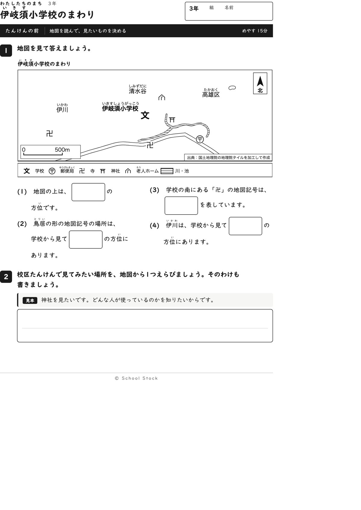
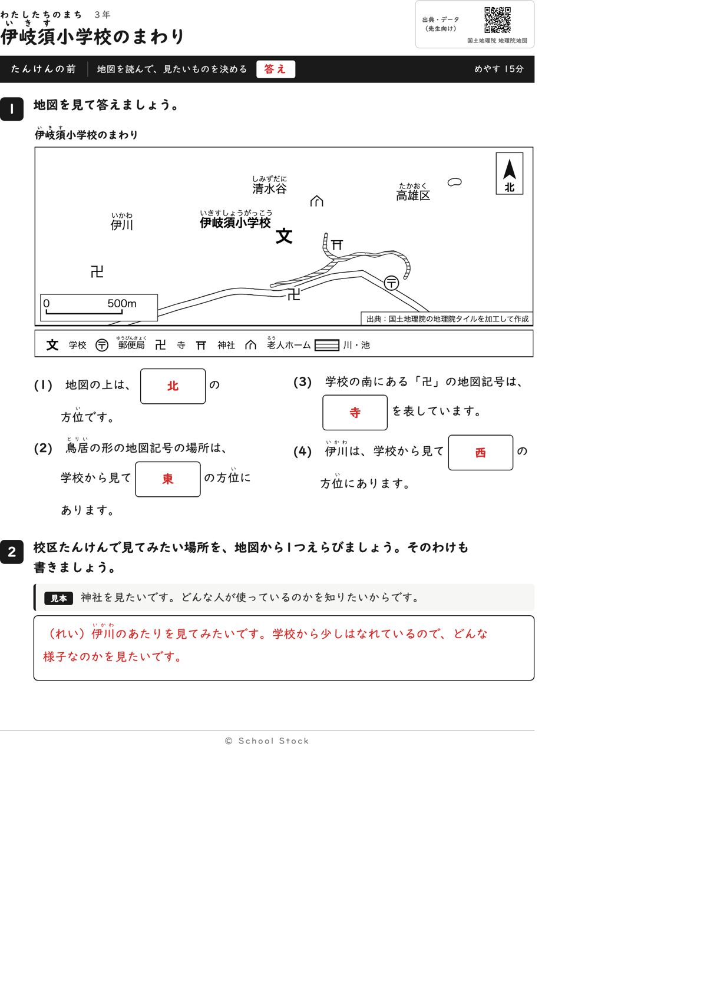
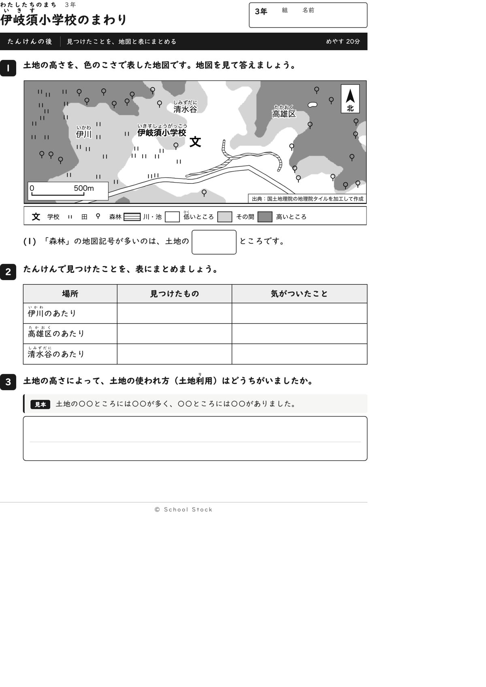
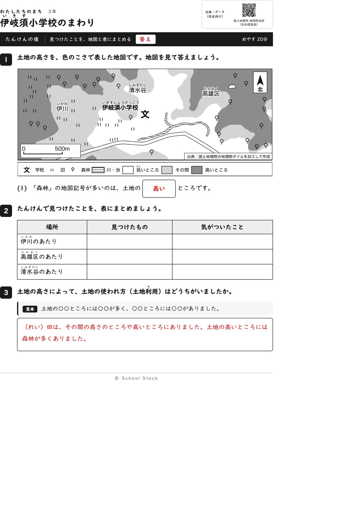
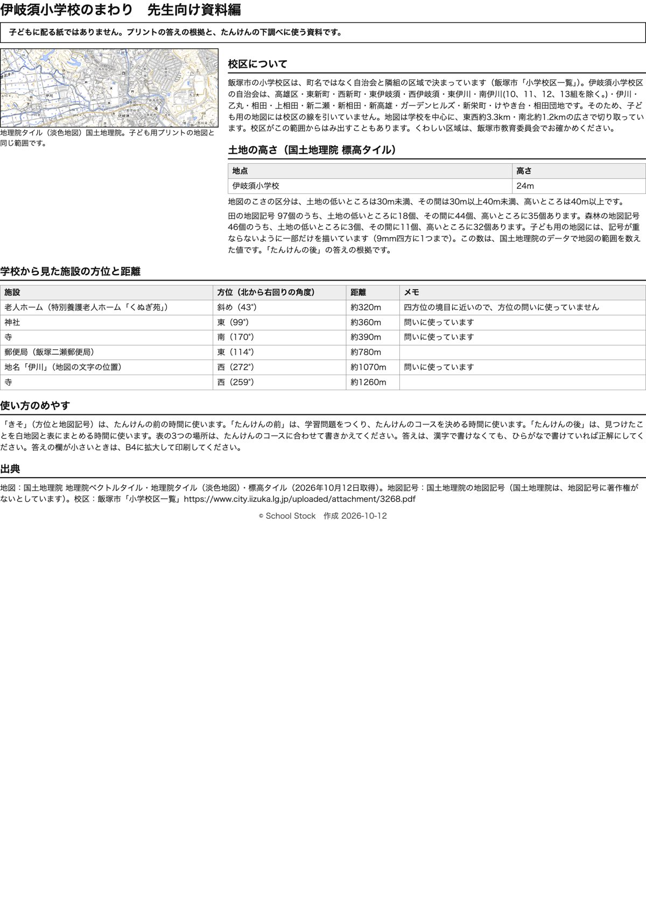

紙





直すところ
直すところはありません。
1回目のレビューで出た直し（4件・道具を直して作り直しました）
| 紙 | どこ | 何が困るか |
|---|---|---|
| たんけんの後 | 1番(1)の問いの文（地図の上のほうのこい色は、土地の□ところです） | 地図の上のほうは、左が濃い灰色、まん中が白、右が濃い灰色になっています。「こい色」だけでは、白いところや薄い灰色を見て答える子がいて、答えが割れます。 |
| たんけんの後 | 1番(3)の問いの文（田の記号を1つ○でかこみましょう。そこは□の色です） | 箱に何を書くのかが分かりません。「低い」「その間」「高い」と書くのか、「白」「うすい灰色」と書くのか、子どもによって変わります。大和は白紙になりやすい問いです。 |
| たんけんの前 | 地図の地名「東伊岐須」のふりがなと、学校名「伊岐須」のふりがな | 学校名は「いきす」、地名は「ひがしいぎす」と、同じ字の読みがちがっています。どちらかが誤りです。 |
| たんけんの後 | 3番の書く問い（土地の高いところと低いところで、土地の使われ方はどうちがいましたか） | 子ども用の紙に見本がなく、3行の白い欄だけです。たんけんの前の2番には見本があるのに、ここにはありません。例がないと1行目で手が止まる子と、書く前に諦める子が出ます。 |
専門家団の声（いまの紙を見て）
香月八重筆頭・全学年
2回目に残した注文はありませんでした。今回見直しても、前は方位を四つと見たい場所の選択、後は「森林は高いところに多い」の一問と表と書く問い、という組み立てのままで、3年の範囲に収まっています。「南にある卍」と問いの文に出てくる南は、答え（寺）とは別の言葉なので、方位の答えが漏れていません。この紙で子どもがつかむことは、高い土地に森林が多いことだと1文で言えます。後の問いが一問だけなのは変わりませんが、迷う問いを増やすよりよいと思います。
日隈耕平社会
縮尺に白い地が敷かれ、道の上でも読めます。学校の文のそばに置く施設の記号は、老人ホームが北東にあるだけで、問いにも使っていません。神社は東99度、寺は南170度、伊川は西272度で、資料編の数字と地図が合っています。田97個、森林46個、高いところの森林32個も紙面の答えと合っています。資料編に「記号は重ならないように一部だけを描いています」と書いてあり、数と見た目のずれの説明になっています。文字の重なりは地図の中にも箱にもありません。小さな点として、南の卍の記号は道の線の上に乗り、道の線が少し切れています。読むのに困る程度ではありません。
藤川湊すぐ終わる子
前は短い時間で終わります。見たい場所を選んで理由を書くところが少し考えるところです。後は一問なのですぐ終わるので、余った時間は田の記号を数えて過ごしたくなります。
田淵さくら例がないと止まる子
前の2番は見本があるのでまねして書けます。後の3番にも型の見本があり、〇〇に言葉を入れればよいと分かります。表の3行は例がありませんが、3番の型が助けになります。
轟大和読む前に諦める子
後の問いは森林の記号がたくさんある濃い色を探せばよいと分かり、読む前に諦めずに済みます。前の方位は上、東、南、西と問いが短くて、全部手が動きそうです。3番は型があるので白紙にはならないと思います。